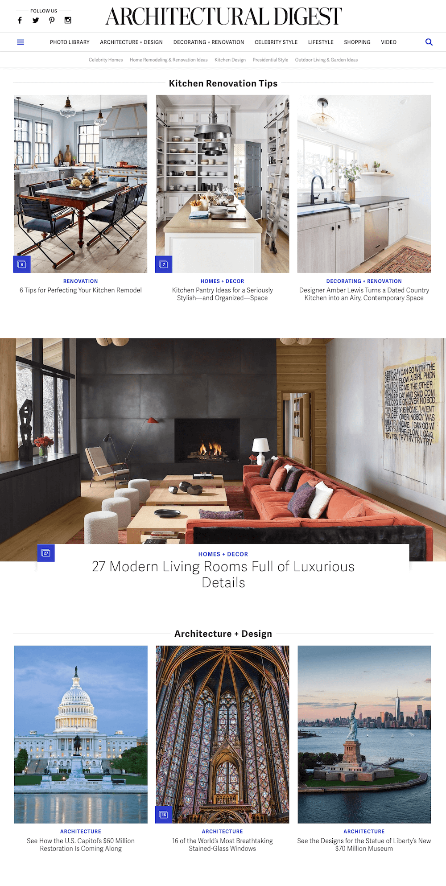
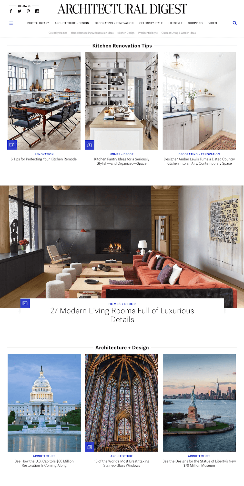

YA-TING WANG
汪亞婷
YA-TING WANG
A redesign that empowered editorial story telling and provided readers engaging experiences.
The redesign has increased 67% digital audience along with editorial strategy.
Defining new opportunities through stakeholder interviews and user data research


Card sorting exercise with the editorial team to re-organize site structure

We designed homepage for bite-sized editorial curations, and enabled enticing photographies to tell engaging stories through clean layouts
 

Designed and styled in CSS the company's blog site for the engineering team.
I presented 3 iterations to the engineering team, these are the ones not chosen. One lesson learned — devs like designs as simple as possible (considering they have to build it ).


I made a gif to celebrate the very first blog post on the site written by our VP of Engineering.

I like working in a multi-disciplinary team to identify the right problems. It thrills me when product management, design, and engineering enhance experiences through digital and physical space.